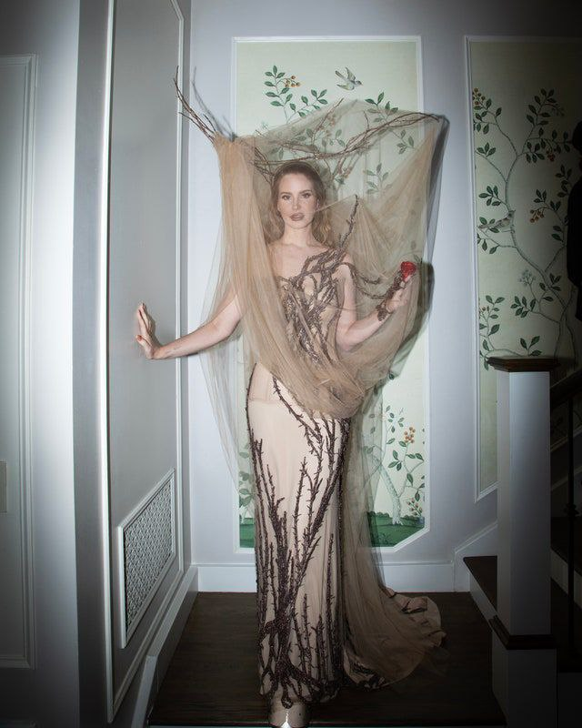

Musician Lana Del Rey is known for her melancholic and often nostalgic sound featured on songs like “Summertime Sadness,” “Young and Beautiful,” and “West Coast.” Del Rey first performed under her real name, Lizzy Grant, but found fame as Lana Del Rey in 2011 with a self-produced music video for her song “Video Games.” She has since sold millions of albums, beginning with 2012’s Born to Die, and earned 11 Grammy nominations. Del Rey released her ninth studio album, Did You Know That There’s a Tunnel Under Ocean Blvd, in March 2023. Her new album, Lasso, is expected this September.
Lana Del Rey (born June 21, 1985, Manhattan, New York, U.S.) is an American singer-songwriter known for pairing glamorously morose musical themes with classic Americana and a nostalgic, cinematic visual style.
Lana Del Rey and her siblings — sister Caroline and brother Charlie — come from a creative family. The “Video Games” singer, born Elizabeth Grant, and her siblings, Caroline “Chuck” Grant and Charlie Hill-Grant, were raised in upstate New York by their parents, Robert Grant and Patricia Ann Hill.
Lana Del Rey was born Elizabeth Woolridge Grant in New York City on June 21, 1985, the oldest to Robert England Grant, Jr., a Grey Group copywriter turned entrepreneur, and Patricia Ann "Pat" (Hill), a former Grey account executive turned high school teacher. She has one younger sister, Caroline Grant, and one brother, Charlie. She has one niece, Phoenix Pickens-Grant, who is the daughter of her sister. Her paternal grandfather, Robert England Grant, Sr. was a Kidder, Peabody & Co. investment banker, a vice president for Plough, Inc, Textron, and venture capitalist. She is of Scottish descent.
Del Rey grew up in rural Lake Placid, New York, and was raised Roman Catholic. She attended a Catholic elementary school and for one year, a high school where her mother taught. She began singing in her church choir when she was a child, where she was the cantor. At age fifteen, she was sent to Kent School by her parents to deal with her rampant alcohol abuse; her uncle, an admissions officer at the school, secured her financial aid to attend.
Before becoming a singer, Del Rey wanted to be a poet. As a child, her father wrote country songs for personal enjoyment, while her mother was interested in singing; the former introduced her to The Beach Boys, while the latter was a fan of Carly Simon.
After graduating, Del Rey was accepted to the State University of New York at Geneseo, but she decided not to attend and instead spent a year living on Long Island with her aunt and uncle while working as a waitress. During this time, Del Rey's uncle taught her how to play guitar, and she "realized [that she] could probably write a million songs with those six chords". Shortly after, she began writing songs and performing in nightclubs around the city under various names such as "Sparkle Jump Rope Queen" and "Lizzy Grant and the Phenomena". "I was always singing, but didn't plan on pursuing it seriously", Del Rey said. "When I got to New York City when I was eighteen, I started playing in clubs in Brooklyn—I have good friends and devoted fans on the underground scene, but we were playing for each other at that point—and that was it".
Lana Del Rey On Creating Her Name
Before Del Rey found widespread success, she experimented with various stage names, attempting to find the one that defined her best. Her birth name is Elizabeth Woolridge Grant, although she has never used this to release music. In 2005, she recorded the EP From The End under the name May Jailer and the full-length album Sirens the following year. These were entirely acoustic projects which leaked on the internet when Del Rey rose to fame.
By 2011, Lana Del Ray had become Lana Del Rey, which she has used for all subsequent releases. Talking to Vogue, she once explained how she picked her stage name. “I wanted a name I could shape the music towards. I was going to Miami quite a lot at the time, speaking a lot of Spanish with my friends from Cuba – Lana Del Rey reminded us of the glamour of the seaside. It sounded gorgeous coming off the tip of the tongue.” Del Rey also took inspiration from the actor Lana Turner, who encapsulated the Hollywood glamour she wanted to emulate.
Del Rey’s decision to pick a distinctive pseudonym paid off – it’s one of the most iconic names in modern music, perfectly reflecting the drama and beauty of her songs.
Lana Del Rey Career
Haters are gonna hate. The reality for an artist is that not everyone is going to love what you make. Not everybody is going to understand where you are coming from. Not everyone will give you the benefit of the doubt when doubt is rampant. In our pre-packaged world we haven't been exposed to the growth of an artist. We can't let someone grow, can we? It's not good enough that the artist is smart, insightful and mesmerizing. That artist should not miss the mark AT ALL. The artist should not have anxiety or be nervous about the massive steps that confront and carry her forward into an unknown world of fast-paced scrutiny and limitless judgement. Lana Del Rey is a beautiful, shy and intricate human being with a meaningful and sultry voice that connects both emotionally and viscerally.
Her style is impeccable and her presence resonates with both curiosity and confidence. The "Video Games" single that met with so much love pushed her into the world. She has only had a few shows to capture her personal melodies in a public presentation that matches who she is. This is about supporting artists in their future. We should be there for their best and most challenging moments as they grow into their full potential. If you have belief in the artists you love, then believe that it's about the journey, and not just the destinations. (ie. SNL) Lana Del Rey is a true artist on her way to greatness and, the truth is, you have to love her a little to hate her at all.

Lana Del Rey’s 2024 Met Gala Look References an Iconic Alexander McQueen Collection
Fresh off headlining the Coachella music festival last month, Lana Del Rey made a triumphant return to the Met Gala last night—marking her first time attending since 2018. And, as usual, the singer brought forward an ethereal and dark but romantic fashion look for the affair: She commanded the famed Met steps in a custom design by Alexander McQueen’s Seán McGirr.
Lana Del Rey Has Strong Words to Say About BFF Taylor Swift
Lana Del Rey is once again showing unwavering support for her friend Taylor Swift. As Swift's highly anticipated Eras Tour arrives in the U.K. on Friday, June 7, Del Rey, who collaborated with Swift on the song "Snow On The Beach," praised the singer's dedication and ambition.
She's told me so many times that she wants it more than anyone. And how amazing — she's getting exactly what she wants," Del Rey, 38, told BBC News, adding, "She's driven, and I think it's really paid off."